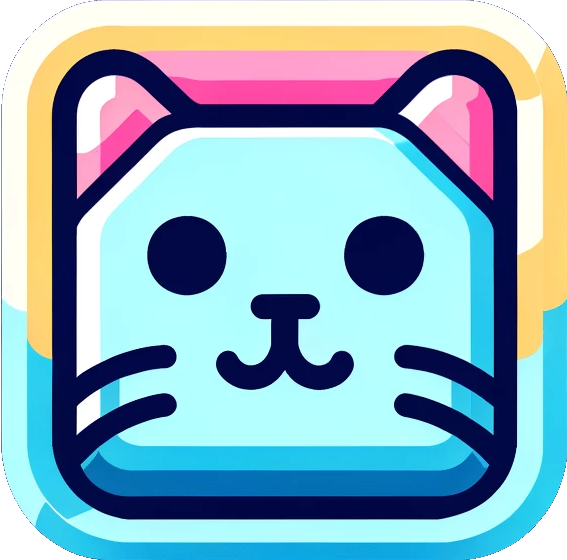

Click to connect!
Nyan Keys - Keyboard Interface
Your browser does not support the Web Serial API. Use Chrome/Chromium
NyanOS (NOS) Graphical User Interface
A basic interface to your keyboard - Click the nyan cat to get started